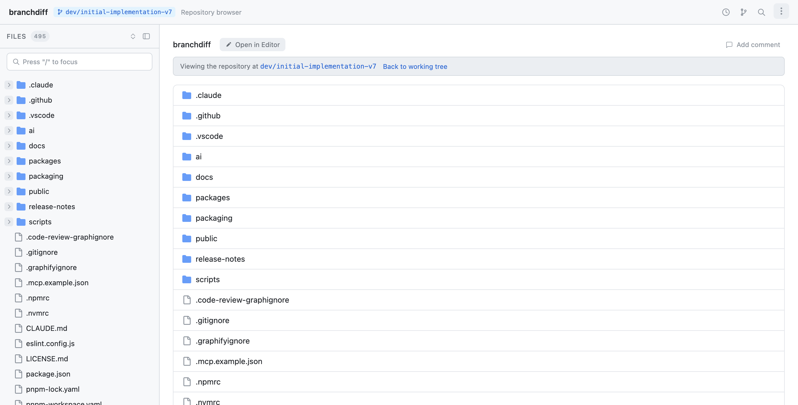
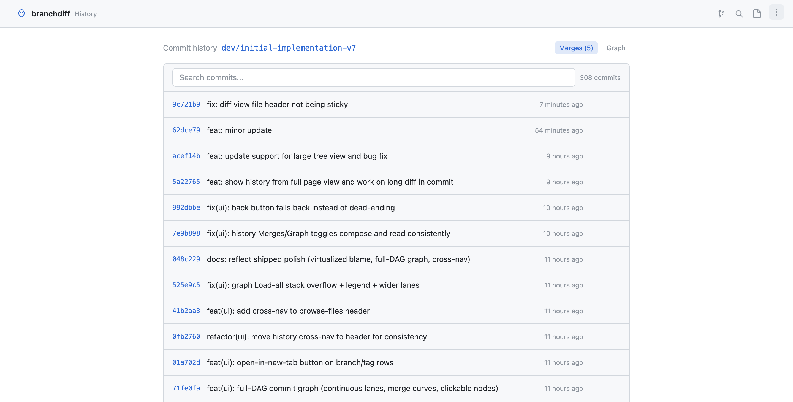
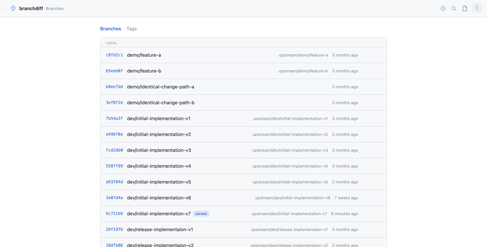
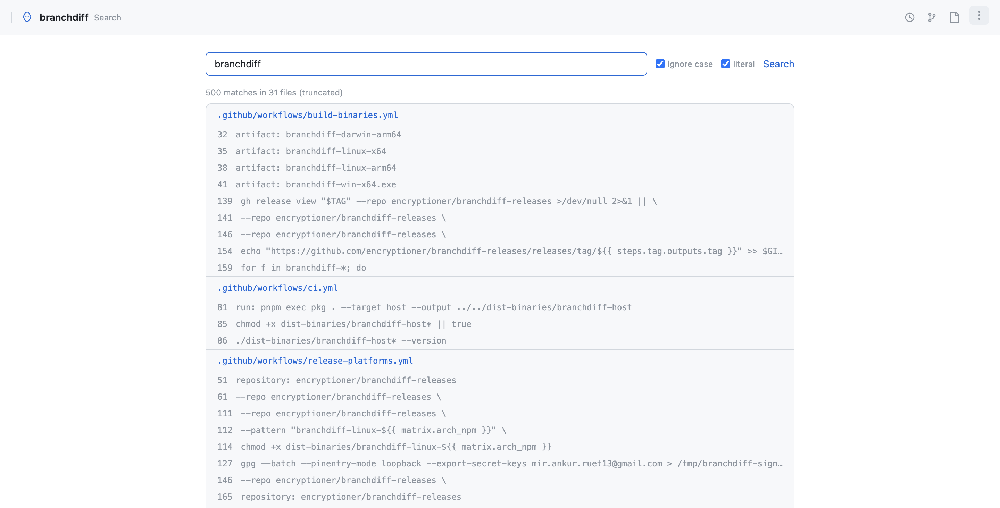
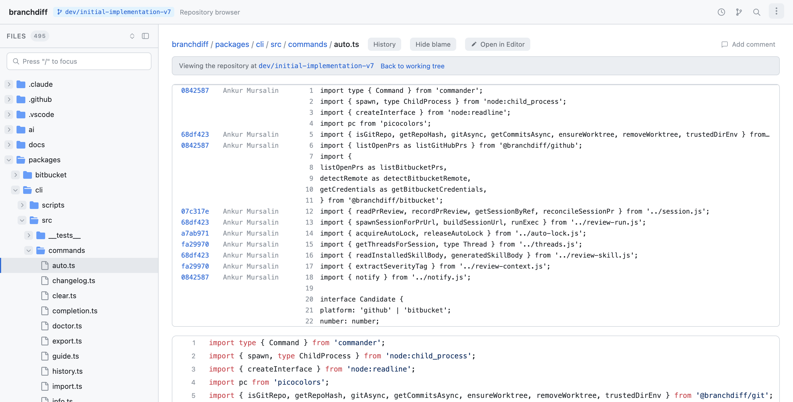
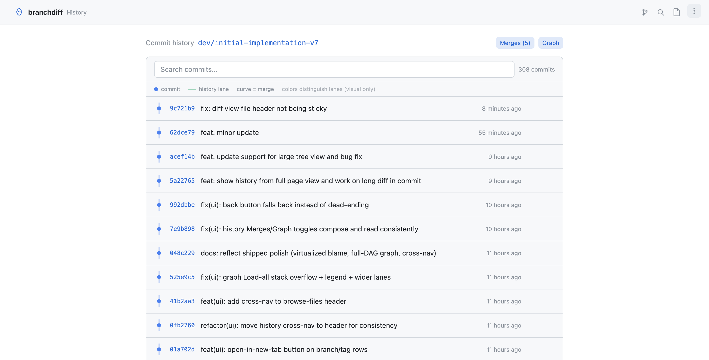
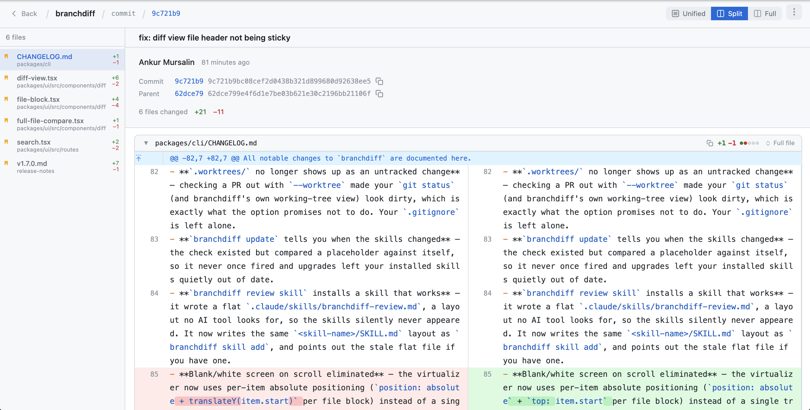

Deck 07 · branchdiff features
Time-travel through the repo — without touching your working tree.
History, commit graph, blame, file tree, code search, branches, and repo-at-a-commit — all in one browser tab, all read-only, all virtualized past a few hundred rows. No detached HEAD, no paginated forge lists, no per-file blame round-trip.
cli history · show · tree · blame · search · branches
read-only never modifies working tree
virtualized 150+ row threshold
02 · the problem
Every exploration tool is elsewhere, slow, or dangerous.
- git log is text. No structure, no inline diff, no merge curves — pipe it into less and squint.
- Forge commit lists paginate. 50 commits per page, each click a cloud round-trip; "Load more" until the tab freezes.
- Blame is one file per page. GitHub blame on a 4,000-line file is a separate URL and a long render — and you do it again for the next file.
- git checkout <old-commit> detaches HEAD. Browse the repo at an old commit and one wrong commit lands you in detached-HEAD limbo.
- Linear history hides structure. A flat list hides which commits landed on which branch and where the merges happened.
The result: exploring a repo means five tools and five round-trips — terminal for log, browser for blame, a forge tab for branches, another for search, and a risky checkout to see what the repo looked like last release.
03 · the solve
One tab. Read-only time-travel through the whole repo.
branchdiff reads git directly from disk and renders history, the commit DAG, blame, the file tree, search results, branches, and repo-at-a-commit in one browser tab — all virtualized, all read-only, none of them touching your working tree.
∞
Blame line cap
Virtualized, any file size
150+
Row virtualization
Files · commits · blame
0
Working-tree writes
Read-only time-travel
any
Repo size
No backend, no paginated cloud
One surface, every angle — history list, DAG, blame, tree, search, branches, and repo-at-a-commit all share the same chrome and the same virtualized renderer. Reach for any of them without leaving the tab.
04 · file browser
A real file tree — not a flat list.

branchdiff tree · sidebar tree · syntax-highlighted preview
- Sidebar tree of the whole repo. Collapsible folders, file-type icons, expand/collapse all.
- Syntax-highlighted previews. Source code (Shiki, 150+ languages), rendered markdown, SVG, and image files — all inline.
- Collapsible sidebar. Hide the tree for a full-width preview when you're reading.
- Reachable from the CLI. branchdiff tree opens the same browser view as the in-app icon nav.
05 · commit history
Full history — start of repo to any ref.

branchdiff history · search · Merges toggle · Load all · virtualized
- From the start of the repo to any ref or range. Same renderer handles a 20-commit branch and a 20,000-commit main.
- Search inline. Filter by message, author, or SHA without re-running git.
- Merges toggle. Show or hide merge commits; the count badge reflects what's filtered.
- Load all button. Past the first batch, click to pull the rest on demand — no upfront fetch of 20k rows.
- Hover any row. Copy the hash to clipboard or open the commit in a new tab.
Per-file history follows renames. Open a file and press History — full-file compare has the same button, both open in a new tab so your place in the diff is preserved.
06 · repo-at-a-commit
Browse the whole repo as it looked at any ref.
- branchdiff show <ref>. Accepts a commit SHA, tag, branch, HEAD~N — anything git rev-parse --verify accepts.
- Tree, folder, and content all reflect that ref. Walk the file tree, open files, read previews — every view is pinned to the commit you chose.
- Working tree stays on your branch. No git checkout, no detached HEAD — your edits and your branch are untouched.
- Read-only time-travel. The repo view is rendered from git objects; nothing is written to disk.
Why it matters: the safest way to answer "what did this file look like in v1.4.0?" — open a second tab at that tag, diff in your head, never leave your working branch.
07 · branches & tags
Every ref in the repo — local and remote.

branchdiff branches · last-commit time · tracking info · click → history
- Every local and remote branch, every tag. One list, sortable, with the full ref namespace.
- Last-commit times. See at a glance which branches are active and which are stale.
- Tracking info. Which local branch tracks which remote, and whether it's ahead or behind.
- Click → history. Jump straight into the commit list for that branch or tag.
- Hover → copy / open. Copy the ref name or open it in a new tab.
08 · code search
git grep — rendered, not piped to less.

branchdiff search · results grouped by file · literal / regex · case options
- Across every tracked file. Runs git grep over the working tree — untracked files don't pollute results.
- Grouped by file. Each file becomes a collapsible section with its match count.
- Literal or regex. Toggle match mode; case-sensitive or case-insensitive.
- CLI or in-app. branchdiff search "useState" opens the same rendered view as the search box in the toolbar.
09 · blame view
Blame any file — no line cap, no per-file round-trip.

branchdiff blame · per-line commit · author · message · grouped into hunks
- Open a file, press Blame. One keystroke from any file preview — no separate URL per file.
- Per-line commit, author, and message. Adjacent lines from the same commit are grouped into a single hunk — the eye finds the boundary instantly.
- Virtualized, any size. A 10,000-line file scrolls at 60fps — only visible rows are in the DOM.
- No line cap. Unlike the forge blame view, nothing truncates at line 1,500.
10 · commit graph
The DAG — merge curves, colored lanes, clickable nodes.

branchdiff graph · colored lanes · merge curves · legend · tooltips
- Toggle beside the history list. Same commits, structural view — see where branches diverged and merged.
- Continuous colored lanes. Each branch keeps its color across the visible range.
- Merge curves. Merges draw as smooth curves, not stair-steps — the topology reads at a glance.
- Click any node. Jump to the commit detail page; hover for author, date, and message tooltips.
- Merges + Graph compose. Toggle merge filtering and the graph view in either order.
11 · commit detail
A commit page that has everything.

/commit/:hash · full SHA · parents · file list A/D/M/R +N/-N · unified / split diff
- Full SHA with copy button. The complete 40-char hash, one click to clipboard.
- Author, date, message. Rendered as the commit was authored, including multi-line messages.
- Parent links. Merges show both parents; click to walk back through either side.
- File list with status. Added / Deleted / Modified / Renamed, plus +N/-N line counts per file.
- Unified or split diff. Same renderer as the branch comparison — view modes are consistent across the app.
- Session-aware comment threads. View-only threads on a single commit don't leak into branch comparison sessions.
12 · cross-page chrome
Small things that add up across every page.
merge
Purple badge
Detected from %P — squash & fast-forward excluded
↔
Swap button
Reverse base / compare in one click
↓ N
Behind-by indicator
Amber badge when base trails compare
- Cross-page icon nav. History, branches, search, and files share a header nav — switch views without losing your ref.
- Back button always sensible. Navigating into a commit or file pushes real history entries; browser back returns you to the right place.
- Typo-tolerant refs. Mistype a branch or tag and branchdiff matches the closest one rather than 404'ing.
- Merge badges from %P. Two parents = merge badge; squash and fast-forward commits stay unbadged.
Behind-by + Swap. An amber ↓ N behind badge tells you the base is stale; the ↔ button reverses base and compare so you can flip perspective on the same pair.
13 · cli
Every view — one terminal command away.
history · show
$ branchdiff history
# full history of the current branch, virtualized
$ branchdiff show v1.7.0
# browse the whole repo as it was at the v1.7.0 tag
$ branchdiff show HEAD~5
# any valid git ref — SHA, tag, branch, HEAD~N
search · branches
$ branchdiff search "useState"
# git grep across tracked files, grouped by file
$ branchdiff search "function \\bauth[A-Z]" --regex
# literal or regex, case-sensitive or insensitive
$ branchdiff branches
# every local/remote branch + tag, last-commit times
Same views, two entry points: every CLI command here opens the identical browser surface you reach from the in-app header nav — pick the entry point that fits where you are.
14 · recap
Repo exploration, in one line.
History, the DAG, blame, file tree, search, branches, and repo-at-a-commit — one tab, all virtualized, all read-only time-travel. No detached HEAD, no paginated forge lists, no per-file blame round-trip.
- File browser with sidebar tree and syntax-highlighted previews — source, markdown, SVG, images.
- Commit history from start of repo to any ref; per-file history that follows renames.
- show <ref> — browse the repo at a commit, tag, or branch; working tree untouched.
- Branches & tags with last-commit times and tracking info; click into history.
- Code search via git grep, grouped by file, literal or regex.
- Blame any file — virtualized, no line cap, no per-file round-trip.
- Commit graph DAG with colored lanes, merge curves, clickable nodes.
- Commit detail with full SHA, parent links, file A/D/M/R counts, unified / split diff.
- Merge badges, typo-tolerant refs, behind-by indicator, and a one-click swap.